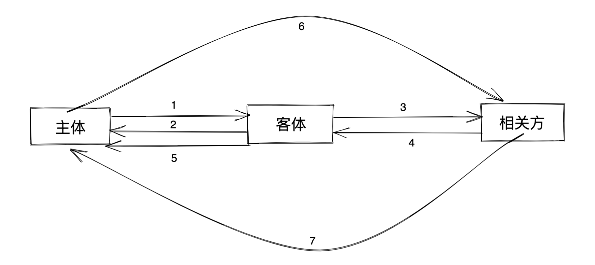

引言
在谈绩效后，我收获了一些心得，在此梳理出来，加深印象并且共勉
基本信息
在步入职场后，你可能跟我一样虽然技术水平有在上升，但是在处理一些事情上可能偶尔没能获得预期的成果。我在通过绩效沟通以及自我反思后得出以下几点，如果你也有类似的情况可能需要加强些
- 沟通方式
- 工作中完整的沟通链路
- 何时沟通
- 风险汇报
- 心态方面
- 皮实
- 客观
- 师傅领进门
- 人无远虑，必有近忧
沟通方式
沟通链路
在国内大部分互联网公司不会需要你有非常强悍的专业技能，但如果想把事情做好那必不可少的就是沟通能力，沟通技能不像编码那样有明确的测量指标，但这并不代表没有沟通模板。下面这是工作中通用的沟通链路模板，分别由主体、客体以及相关方构成，在工作中我们常常扮演其中的一个角色
主体：事件的发起者，工作中常见的例如：你的直接上级给你派活、某些专项的事情需要你支持、产品/PM等
客体：主体命令的执行者，工作中常见的例如：你、你派发任务的那个人等
相关方：所有事件推进过程中需要配合的人员，例如：事件变更会影响到的人员、事件推进中需要配合你们的人员等
理清这三个角色后，接下来让我们看看正常一个事件的完整流程，事件假设为：你们的大数据集群下个月需要扩容
- 你的上级将这个任务派发给你，指定下个月要进行完成
- 收到信息跟上级确认细节以及相关事项，同时给上级承诺完成
- 梳理出本次变更中会影响到的下游使用方、运维同学等等，并同步要变更的信息，同时要明确每个相关方都收到通知
- 在相关方响应后，要跟他们确定需要他们做操作的事件，例如需要运维同学在两周后提前扩好机器备用等并推进
- 在跟相关方都梳理清楚后跟你的上级进行同步，如果梳理的时间比较长可以每隔一段时间进行同步
- 你的上级在确认好后，如果本次事件的影响是比较大的话。应该跟相关方或者相关方的上级在check下
- 相关方对这件事情做二次确认，例如邮件、群消息或者文档跟进
以上基本就是一个事件发生的完整链路，不复杂但是工作中往往会忘记，浓缩成一句心得就是，“事事有着落，件件有着落”
何时汇报
大致分为以下三种情况
-
某一方信息有变动时
当你知道的任何一方包括你自己存在信息变动时，可以考虑进行汇报。例如你下个月突然有事要请假，那么你应该第一时间跟你的上级沟通，看看这个事情能够前置或者后置，或者能够换个人来接替这件事情等
-
定期汇报
例如在周会、日例会上进行定期进展同步，如果这件事比较重要可以单独拉个专项，针对这个专项定期进行开会对进展
-
存在风险时
当你识别到可能存在风险时，例如要运维扩机器，但是跟第三方的商务合约还没谈拢导致无法按期分配机器，那么这样的风险就应该第一时间同步给你的上级以及相关方
风险汇报
风险汇报务必要做到快、准、客观。快就是第一时间要立马同步，准是要先快速确认下信息的准确性，客观就是风险跟你相关或者由你引起的时候，不要担心担责或者被责备，应该保持客观的心态去汇报这个事情。一定要谨记一件心得，就是鼓足干劲把事件做好才是最重要的，其他的都是其次。
心态方面
皮实
简单来说遇到困难、责备、复盘的时候，要耐C。无论生活工作把你摁在地上摩擦成什么样，你站起来继续做你该做的事情。你要明确自己来这里的目的是什么，为钱、为成长、为实现自我价值等，你要牢记这一点，工作只是辅助工具，辅助你实现你的目的。因此即便工作一时做不好或者被责备，不要觉得天塌了，其实真的没有那么严重，你但凡把自己人生的时间线拉长一些你都会发现，过去某个时间段你觉得非常重要的事情在现在看到是不是基本都是风轻云淡了？例如期末考试考砸了、打游戏被父母抓到、失恋、足球比赛失误等等等等，哪一件不是当时觉得非常重要甚至世界崩了，但是回首都轻的像是一片羽毛，像是别人的故事一般，就像苏东坡的那句“回首向来萧瑟处，也无风雨也无晴”。因此牢记自己的初心，你一定可以越来越耐C～
不皮实可能可能会给你带来的缺点
- 由于害怕责备，重要的事情一拖再拖，遇到风险迟迟不敢汇报
- 由于害怕别人指出自己的缺点，会议上迟迟不敢发表自己的想法
- 工作复盘几次后，自己觉得世界塌了，工作干脆开始摆烂
- 情绪变的暴躁，会觉得是全世界的错，看谁都不爽，路边的狗都想上去扇两个耳光～
除了以上种种还有很多，就像那句话说的一样 “勇敢的人先享受世界～”，你不妨大胆些去试试，换句话说，这个世界其实没有太多人关注你，你为啥不follwer自己的内心，做自己想做的事情呢
客观
这个词可能不是很准确的表达，大致意思就是我们在看待很多跟自己相关的事情的时候要尽量客观，例如自己的项目搞砸了，自己可能存在的那部分就是做得不好，没有什么好狡辩的，这里指的狡辩不是对任何人，而是对你自己，你自己心里要清楚自己不足的地方以及积极改进，否则每次事情做不好都怨这怨那的最终自己没有得到任何的提升
师傅领进门
这个也可以理解为独立做事能力，很多事情不要过多依赖别人，例如排查到一个跟数据库相关的问题，不要直接丢给dba，要自己检查下SQL写的是否有问题，连接mysql的参数是否有误等等，如果遇到事情就要依赖别人，不仅自己得不到成长，还会退化，最后任何事情都要别人手把手指导，这恐怕也不是你想成为的那个人吧？如果遇到事情自己积极主动处理，会让你不断的扩充自己的知识，提升自己的做事能力，形成一个良性循环
人无远虑，必有近忧
我们工作中经常会遇到各种各样的问题，因此我们应该透过现象看本质，知道本质的问题是什么后尽可能的从本质上处理了。例如你负责的A项目的某个模块经常出问题，你排查后发现代码设计一塌糊涂，那么与其不停的话时间不断的修bug，那为啥不直接抽时间梳理清楚逻辑然后重构下呢？头疼医头脚疼医脚永远不会健康，很多时候做事情眼光也要放长远些
写在最后
本篇写给自己以及所有可能跟我一样，有时候过多专注于编码，忽略了一些软技能导致工作没有达成预期的朋友，同时也感谢一路上给我提供技术指导、做事指导的朋友们